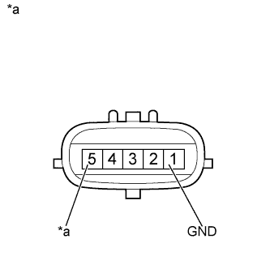

DTC P0412 Цепь "A" клапана переключения подачи воздуха вспомогательной системы подачи воздуха в нейтрализатор |
| № DTC | Условие обнаружения DTC | Неисправный участок |
| P0412 |
|
|
|
|
| 1.ПРОВЕРЬТЕ КОМПЛЕКТ КЛАПАНА СИСТЕМЫ СНИЖЕНИЯ ТОКСИЧНОСТИ ОТРАБОТАВШИХ ГАЗОВ |
|  |
Отсоедините разъем комплекта клапана системы снижения токсичности отработавших газов.
Измерьте сопротивление в соответствии со значениями, приведенными в таблице ниже.
| Контакты для подключения диагностического прибора | Условие | Заданные условия |
| 5 (+B) - 1 (GND) | 20°C (68°F) | 4,5 - 5,5 Ом |
| *a | Устройство с неподсоединенным жгутом проводов (комплект клапана системы снижения токсичности отработавших газов) |
Подсоедините разъем комплекта клапана системы снижения токсичности отработавших газов.
|
| ||||
| OK | |
| 2.ПРОВЕРЬТЕ ЖГУТ ПРОВОДОВ И РАЗЪЕМ (КОМПЛЕКТ КЛАПАНА СИСТЕМЫ СНИЖЕНИЯ ТОКСИЧНОСТИ ОТРАБОТАВШИХ ГАЗОВ - МАССА) |
Отсоедините разъем комплекта клапана системы снижения токсичности отработавших газов.
Измерьте сопротивление в соответствии со значениями, приведенными в таблице ниже.
| Контакты для подключения диагностического прибора | Условие | Заданные условия |
| C44-1 (GND) - масса | Всегда | Менее 1 Ом |
Подсоедините разъем комплекта клапана системы снижения токсичности отработавших газов.
|
| ||||
| OK | |
| 3.ПРОВЕРЬТЕ ЖГУТ ПРОВОДОВ И РАЗЪЕМ (КОМПЛЕКТ КЛАПАНА СИСТЕМЫ СНИЖЕНИЯ ТОКСИЧНОСТИ ОТРАБОТАВШИХ ГАЗОВ - УСТРОЙСТВО УПРАВЛЕНИЯ ПОДАЧЕЙ ВОЗДУХА В НЕЙТРАЛИЗАТОР) |
Отсоедините разъем комплекта клапана системы снижения токсичности отработавших газов.
Отсоедините разъем устройства управления подачей воздуха в нейтрализатор.
Измерьте сопротивление в соответствии со значениями, приведенными в таблице ниже.
| Контакты для подключения диагностического прибора | Условие | Заданные условия |
| C44-5 (+B) - A16-6 (VV) | Всегда | Менее 1 Ом |
| Контакты для подключения диагностического прибора | Условие | Заданные условия |
| C44-5 (+B) или A16-6 (VV) - масса | Всегда | 10 кОм или более |
Подсоедините разъем комплекта клапана системы снижения токсичности отработавших газов.
Подсоедините разъем устройства управления подачей воздуха в нейтрализатор.
|
| ||||
| OK | ||
| ||